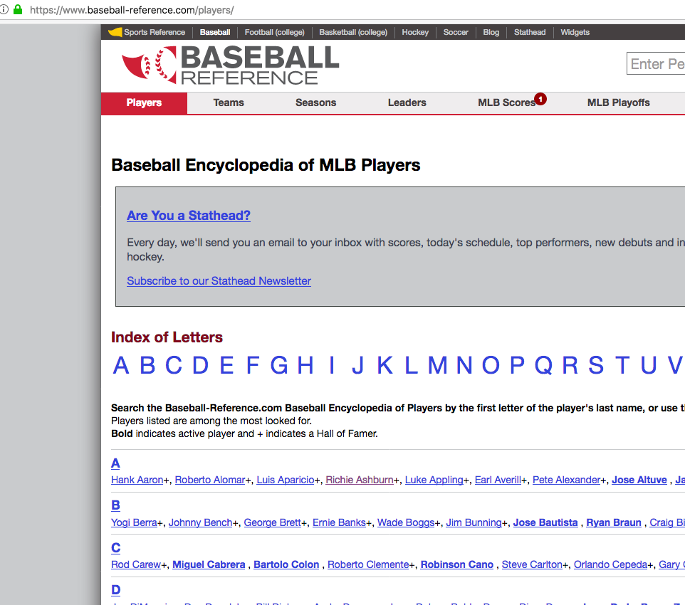

List operations…

Xiongtao Dai
## [[1]]
## [1] 1 2
##
## [[2]]
## [1] "ha" "ma" "da"[ accesses sub lists## [[1]]
## [1] "ha" "ma" "da"[[ accesses elements## [1] "ha" "ma" "da"
<h1>, <div>, <a>, etc) rvest packagervest: A package for making web scraping simpler.
We want to crawl top demostic movie info from https://www.the-numbers.com/box-office-chart/weekend/2020/03/13 before the COVID-19 freeze.
read_html gets all the information from a URL
library(rvest)
url <- "https://www.the-numbers.com/box-office-chart/weekend/2020/03/13"
html <- read_html(url)
html## {html_document}
## <html xmlns:og="http://ogp.me/ns#" xmlns:fb="http://www.facebook.com/2008/fbml">
## [1] <head>\n<!-- Global site tag (gtag.js) - Google Analytics --><script asyn ...
## [2] <body>\n\r\n<script>\r\n window.fbAsyncInit = function() {\r\n FB.ini ...html_table extracts all tables from the sourced html into a list of data frames:
## [1] 2## [1] "list"## List of 2
## $ :'data.frame': 1 obs. of 3 variables:
## ..$ X1: chr "← Previous Chart"
## ..$ X2: chr "Chart Index"
## ..$ X3: chr "Next Chart →"
## $ :'data.frame': 79 obs. of 11 variables:
## ..$ : int [1:79] 1 2 3 4 5 6 7 8 9 10 ...
## ..$ : chr [1:79] "(1)" "N" "N" "(2)" ...
## ..$ Movie : chr [1:79] "Onward" "Bloodshot" "I Still Believe" "The Invisible Man" ...
## ..$ Distr : chr [1:79] "Walt Disney" "Sony Pict…" "Lionsgate" "Universal" ...
## ..$ Gross : chr [1:79] "$10,601,952" "$9,176,695" "$9,103,614" "$5,890,805" ...
## ..$ %LW : chr [1:79] "-73%" "" "" "-61%" ...
## ..$ Thr : chr [1:79] "4,310" "2,861" "3,250" "3,636" ...
## ..$ ThrChng : chr [1:79] "n/c" "" "" "+26" ...
## ..$ PerThr : chr [1:79] "$2,460" "$3,208" "$2,801" "$1,620" ...
## ..$ TotalGross: chr [1:79] "$60,360,639" "$9,176,695" "$9,103,614" "$64,310,490" ...
## ..$ W : chr [1:79] "2" "1" "1" "3" ...## Movie Distr Gross %LW Thr ThrChng PerThr
## 1 1 (1) Onward Walt Disney $10,601,952 -73% 4,310 n/c $2,460
## 2 2 N Bloodshot Sony Pict… $9,176,695 2,861 $3,208
## 3 3 N I Still Believe Lionsgate $9,103,614 3,250 $2,801
## 4 4 (2) The Invisible Man Universal $5,890,805 -61% 3,636 +26 $1,620
## 5 5 N The Hunt Universal $5,304,455 3,028 $1,752
## 6 6 (4) Sonic The Hedgehog Paramount… $2,522,584 -67% 3,041 -676 $830
## TotalGross W
## 1 $60,360,639 2
## 2 $9,176,695 1
## 3 $9,103,614 1
## 4 $64,310,490 3
## 5 $5,304,455 1
## 6 $145,753,912 5Most tables need a bit of clean-up:
names(tables[[2]])[1:2] <- c("Rank", "Rank.Last.Week")
box <- tables[[2]] %>% mutate(
Gross = parse_number(Gross),
Thr = parse_number(Thr)
)
str(box)## 'data.frame': 79 obs. of 11 variables:
## $ Rank : int 1 2 3 4 5 6 7 8 9 10 ...
## $ Rank.Last.Week: chr "(1)" "N" "N" "(2)" ...
## $ Movie : chr "Onward" "Bloodshot" "I Still Believe" "The Invisible Man" ...
## $ Distr : chr "Walt Disney" "Sony Pict…" "Lionsgate" "Universal" ...
## $ Gross : num 10601952 9176695 9103614 5890805 5304455 ...
## $ %LW : chr "-73%" "" "" "-61%" ...
## $ Thr : num 4310 2861 3250 3636 3028 ...
## $ ThrChng : chr "n/c" "" "" "+26" ...
## $ PerThr : chr "$2,460" "$3,208" "$2,801" "$1,620" ...
## $ TotalGross : chr "$60,360,639" "$9,176,695" "$9,103,614" "$64,310,490" ...
## $ W : chr "2" "1" "1" "3" ...
Connect to the The-Numbers website for weekly boxoffice gross at https://www.the-numbers.com/box-office-chart/weekend/2020/03/13
 Pick the week that you were last in the cinema. Use
Pick the week that you were last in the cinema. Use rvest to download the box office gross in that week.  Clean up the data. Remove rows not corresponding to movies, and name all the variables (numbers should be numbers).
Clean up the data. Remove rows not corresponding to movies, and name all the variables (numbers should be numbers).
Sometimes data on the web is not structured as nicely … e.g. let’s assume we want to get a list of all recently active baseball players from Baseball reference

vignette("selectorgadget")url <- "http://www.baseball-reference.com/players/a/"
html <- read_html(url)
html %>% html_nodes("#div_players_ a") %>% head()## {xml_nodeset (6)}
## [1] <a href="/players/a/aardsda01.shtml">David Aardsma</a>
## [2] <a href="/players/a/aaronha01.shtml">Hank Aaron</a>
## [3] <a href="/players/a/aaronto01.shtml">Tommie Aaron</a>
## [4] <a href="/players/a/aasedo01.shtml">Don Aase</a>
## [5] <a href="/players/a/abadan01.shtml">Andy Abad</a>
## [6] <a href="/players/a/abadfe01.shtml">Fernando Abad</a>We want to get access to pieces of the links. <tagName attrName=attrContent>Text Contents</tagName>
html_text allows us to get text out,html_attr let us access an attribute of a html node,html_attrs extracts all attributes of an html node:## [1] "David Aardsma" "Hank Aaron" "Tommie Aaron" "Don Aase"
## [5] "Andy Abad" "Fernando Abad"## [1] "/players/a/aardsda01.shtml" "/players/a/aaronha01.shtml"
## [3] "/players/a/aaronto01.shtml" "/players/a/aasedo01.shtml"
## [5] "/players/a/abadan01.shtml" "/players/a/abadfe01.shtml" Use the SelectorGadget on the website for David Aardsma
 Find the css description to extract his career statistics and load them into your R session. Hint: Extract the column names (the row above that starting with CAREER), and then the numbers.
Find the css description to extract his career statistics and load them into your R session. Hint: Extract the column names (the row above that starting with CAREER), and then the numbers.  Does the same code work to extract career statistics for (some of) the other players?
Does the same code work to extract career statistics for (some of) the other players?
url <- "http://www.baseball-reference.com/players/a/aardsda01.shtml"
html <- read_html(url)
# good first start, but not good for further processing
html %>% html_nodes(".stats_pullout")## {xml_nodeset (1)}
## [1] <div class="stats_pullout">\n<div><div>\n<h4>SUMMARY</h4>\n\n<p><strong>C ...## [1] "SUMMARY" "WAR" "W" "L" "ERA" "G" "GS"
## [8] "SV" "IP" "SO" "WHIP"## [1] "Career" "1.8" "16" "18" "4.27" "331" "0" "69"
## [9] "337.0" "340" "1.421"